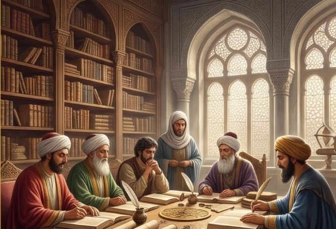
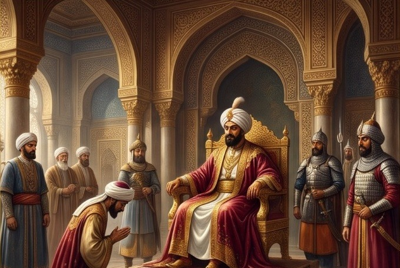
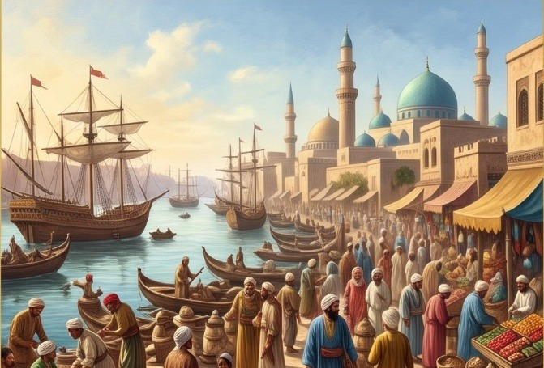
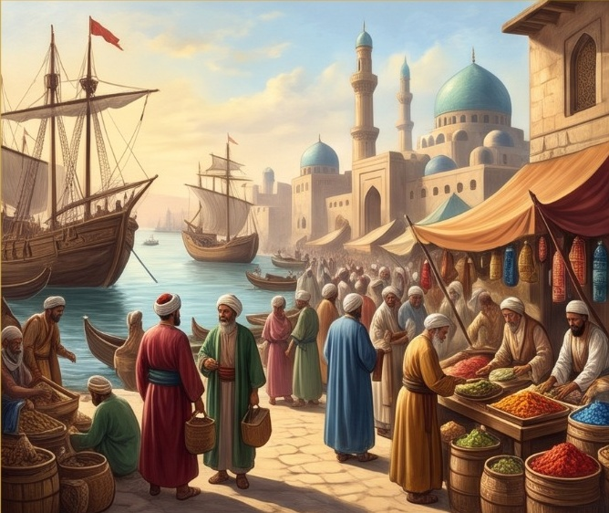
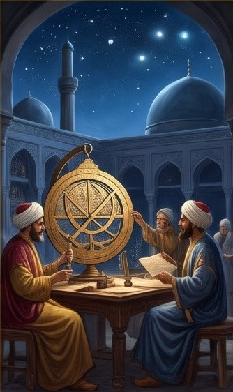
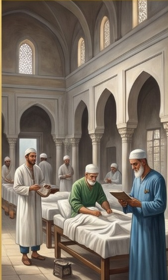
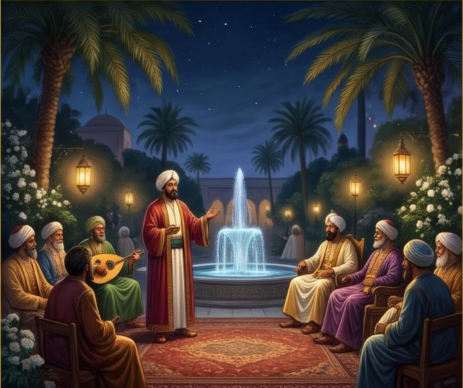

Alur Belajar
Ikuti urutannya. Tekan langkah untuk menandai selesai.
🌟 Sorotan Era Keemasan
Eksplorasi puncak kemakmuran peradaban Islam
Harun Ar-Rasyid & Al-Ma'mun
Kota Baghdad, Bayt al-Hikmah & Diplomasi Global (786–833 M)
Galeri Ilmuwan
Arena Sejarah
Bayt al-Hikmah
Simulator AI

Bayt al-Hikmah & Gerakan Penerjemahan Akbar
Bayt al-Hikmah (Rumah Kebijaksanaan) didirikan oleh Khalifah Harun Ar-Rasyid dan mencapai masa keemasannya di bawah Khalifah Al-Ma'mun. Lembaga ini berfungsi sebagai perpustakaan raksasa, balai penerjemahan, dan akademi riset di mana naskah-naskah kuno Yunani, Persia, dan India diterjemahkan ke dalam bahasa Arab. Para penerjemah terkemuka seperti Hunayn bin Ishaq dianugerahi timbangan emas seberat buku yang berhasil diterjemahkan.

Istana Khilafah Abbasiyah & Diplomasi Internasional
Istana kekhalifahan di Baghdad menjadi poros politik dan diplomasi paling disegani di dunia. Khalifah memimpin dengan tata kelola pemerintahan yang berwibawa, menerima delegasi diplomatik dari Kekaisaran Romawi Timur (Bizantium) hingga Dinasti Tang Tiongkok, serta mengutus perwakilan diplomasi bersejarah kepada Raja Charlemagne di Aachen, Eropa Barat dengan membawakan hadiah jam air mekanik canggih.

Pelabuhan Basra & Jalur Niaga Samudra
Pelabuhan Basra di muara Sungai Tigris dan Eufrat berkembang pesat menjadi gerbang perdagangan maritim antardaulat. Kapal-kapal dagang muslim berlayar mengarungi Teluk Persia, Laut Arab, Samudra Hindia, hingga ke pelabuhan Nusantara dan Guangzhou (Tiongkok). Jalur sutra laut ini membawa kemakmuran sekaligus menyebarkan nilai-nilai Islam yang mengedepankan etika kejujuran dan toleransi.

Perekonomian & Pusat Perniagaan Kota Baghdad
Pasar-pasar (Suq) di kota Baghdad menjadi pusat pertukaran komoditas teramai di dunia. Berbagai barang berharga seperti rempah-rempah nusantara, sutra Tiongkok, kertas Baghdad, kain tenun, minyak wangi, dan perhiasan ditransaksikan secara tertib. Perekonomian ditopang stabilitas mata uang Dinar emas dan Dirham perak, serta sistem perbankan syariah awal berupa suftajah (surat kredit/cek) dan hawalah.

Observatorium Astronomi & Instrumen Astrolab
Khalifah Al-Ma'mun mendirikan observatorium bintang pertama di dunia Islam di Syammasiyyah. Para ilmuwan falak seperti Al-Khawarizmi dan Al-Farghani menggunakan Astrolab kuningan rumit untuk memetakan rasi bintang, menghitung keliling bumi dengan akurasi mengagumkan, serta menetapkan koordinat arah kiblat dan waktu salat yang menjadi rujukan navigasi dunia selama berabad-abad.

Bimaristan: Rumah Sakit Islam & Pendidikan Kedokteran
Bimaristan merupakan cikal bakal rumah sakit modern yang dibangun oleh para khalifah Abbasiyah. Rumah sakit ini menyediakan pelayanan rawat inap gratis bagi semua golongan masyarakat tanpa membedakan suku maupun agama. Memiliki bangsal terpisah untuk berbagai penyakit, apotek farmasi, catatan rekam medis pasien, serta ruang kuliah praktik bagi mahasiswa kedokteran yang dibimbing langsung oleh mahaguru Ibnu Sina dan Ar-Razi.

Majelis Sastra, Syair, & Seni Budaya Islami
Peradaban Abbasiyah menjunjung tinggi kehalusan budi pekerti melalui apresiasi sastra dan seni. Di taman-taman istana yang dihiasi air mancur mekanis dan lentera malam, para penyair, sastrawan, dan musisi berkumpul dalam majelis munadzarah. Tokoh seperti Ishaq Al-Mawsili dan Ziryab menciptakan teori nada, notasi musik, dan menyempurnakan alat musik 'Ud (gambus) yang kemudian melahirkan instrumen lute dan gitar di Andalusia dan Eropa.
⚡ Speed Matching Istilah & Tokoh
Pasangkan nama tokoh ilmuwan/lembaga dengan penemuan & definisinya!
🧩 Puzzle Kronologi & Kutipan Sejarah
Susun urutan peristiwa atau kutipan sejarah secara runtut!
🏆 Papan Peringkat Kelas VIII MTs
Live Real-Time| Rank | Nama | Gelar | Skor |
|---|
🤖 Simulator AI: Dilema Kebijakan Abbasiyah
Studi kasus kepemimpinan, riset peradaban, dan penalaran HOTS berlandaskan nilai Islam
📖 Skenario 1: Anggaran Riset vs Militer
Baitul Mal & Al-Ma'mun (820 M)
🤝 Skenario 2: Ilmuwan Non-Muslim & Toleransi
Hunayn bin Ishaq di Bayt al-Hikmah
💡 Skenario 3: Spirit Bayt al-Hikmah Pelajar
Relevansi Abad 21 (KMA 183)
📊 Panel Guru & Rekap Nilai SKI
Rekapitulasi ketuntasan materi Masa Kejayaan Dinasti Abbasiyah
Fatih Al-Ayyubi
Kelas VIII-A MTs